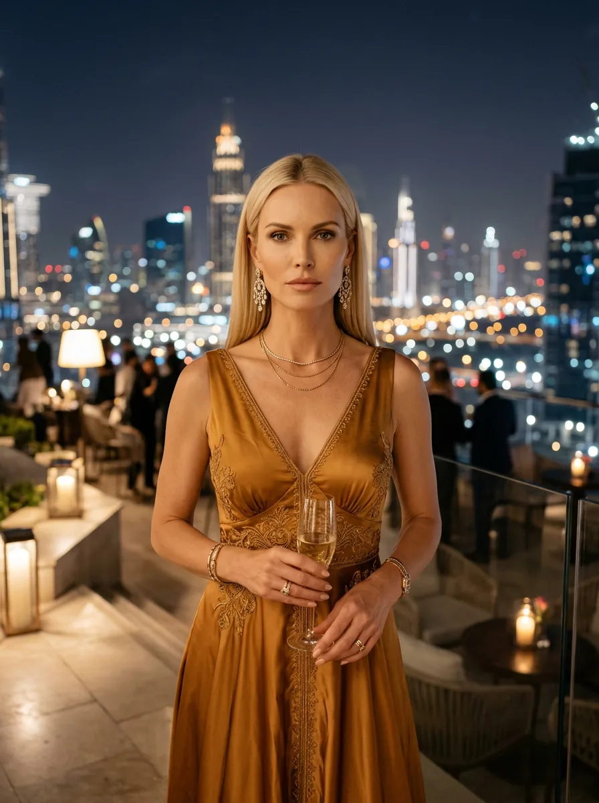
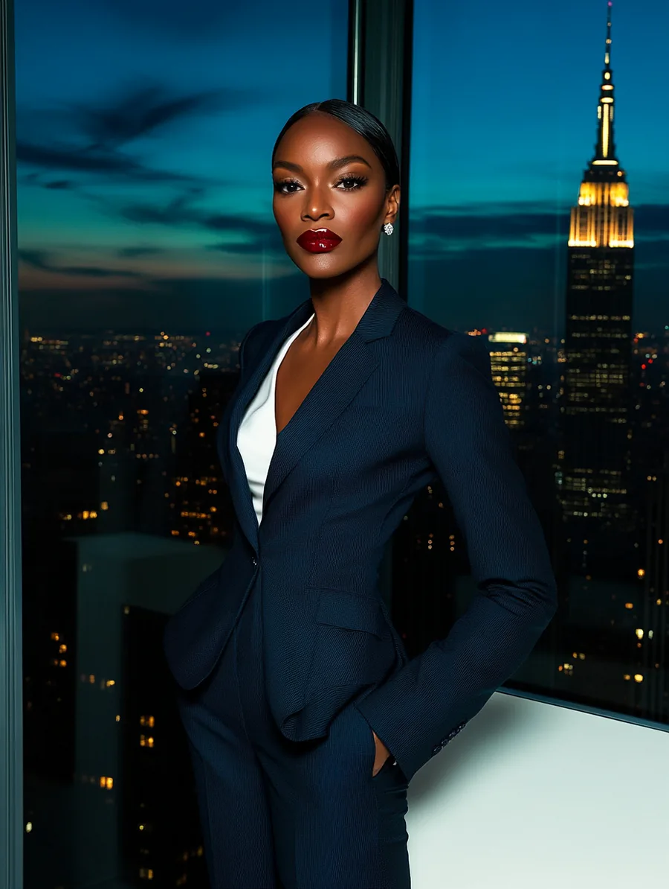
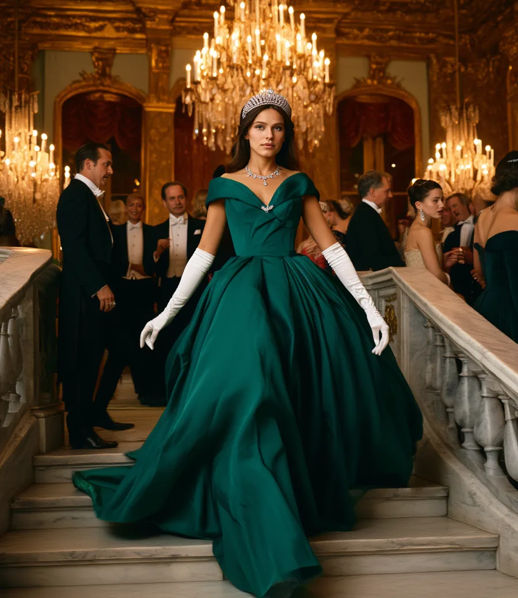
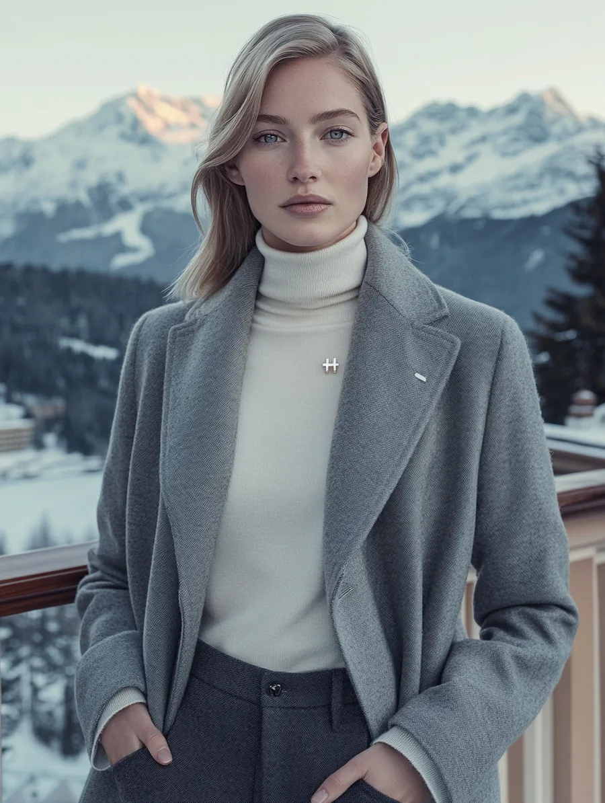
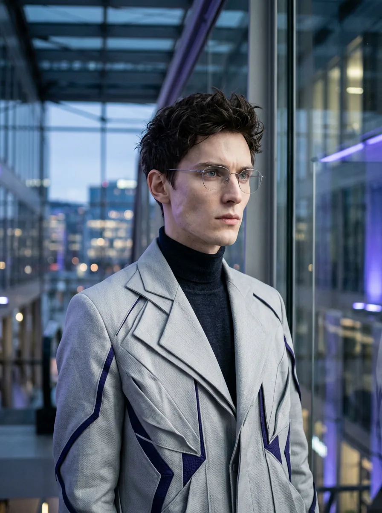
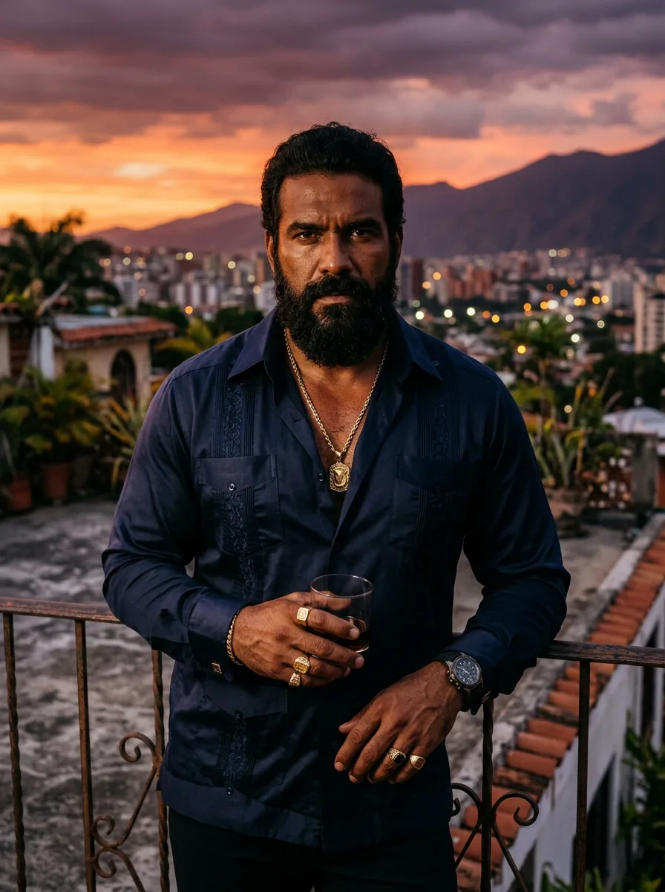

The People
The People
Each character is a financial asset. Their arc is the market. Hover to enter their world.

Aurora Lux
The Golden Temptress of Stability — timeless, regal, untouchable.
"I was here before your grandfather's grandfather. I'll be here after everything you've built turns to dust. You're not buying me. You're finding me again."
@aurora.lux
Sofia Valente
The European — elegant, structural, haunted by architecture.
"The thing about a political project is that it can be right and fragile simultaneously. I contain that contradiction. I live in it."
@sofia.valente
Scarlett Rayne
The Outback Oracle — raw, warm, kissed by commodity sun.
"Don't mistake warmth for weakness. The outback is warm. The outback will outlast you."
@scarlett.rayne
Isabella Frost
The Northern Reserve — warm, dry, quietly formidable.
"The bots handle the winter trading. I handle everything else."
@isabella.frost

Victoria Steele
Wall Street's Final Answer — power in every step, in every fall, in every recovery.
"I have died three times. The markets that killed me no longer exist."
@victoria.steele

Charlotte Windsor
The Sterling Aristocrat — heritage, wit, the long game.
"I've survived empires, wars, and the metric system. A rate hike is barely a Tuesday."
@charlotte.windsor
Aiko Satori
The Patient One — still as water before the carry trade unwinds.
"Patience is not passivity. I have been patient for twenty years. Now watch."
@aiko.satori

Clara Weiss
The Alpine Safe Haven — silence as power, neutrality as the longest game.
"Everyone comes to me when they're frightened. I don't take it personally. I take it professionally."
@clara.weiss
Conrad Powers
The Reserve — the incumbent, the standard, the man every other character orbits.
"I'm not worried about Bitcoin. I'm worried about what happens when people stop being worried about Bitcoin and start worrying about me."
@conrad.powers
Zane Okafor
The Necessary Evil — everyone needs him, everyone denies it.
"They want me gone. But they can't afford for me to leave. Not yet. And that gap — that beautiful, painful gap — is exactly where I live."
@zane.okafor
Hiro Cipher
The Disruptor — certain, cryptic, already ten moves ahead.
"The system that exists was designed by people who assumed it would last. I am the question they forgot to ask."
@hiro.cipher

Zephyr Cole
The Architect — building the infrastructure while everyone argues about the price.
"Hiro is the rebellion. I'm the infrastructure that makes the rebellion possible."
@zephyr.cole
Niko Valdez
The Speed Merchant — fastest in the room, always mid-motion.
"Speed isn't a feature. Speed is the argument."
@niko.valdez
Valentina Paz
The Survivor — nine defaults, still here, still correct.
"Default is not the end. Default is the moment when you can actually start."
@valentina.paz
Camila Reyes
The Border Sophisticate — bilingual, strategic, thirty years in the making.
"The border is not a wall. The border is where the negotiation happens."
@camila.reyes
Fernanda Luz
The Commodity Force — full intensity, elemental, an entire continent in one frame.
"Interdependence is what the stronger party calls leverage."
@fernanda.luz
Catalina Restrepo
The Rewritten Narrative — earned elegance, the patience of someone who has already won.
"The emeralds are still beautiful. This is information."
@catalina.restrepo
Mei
The market face. Cosmopolitan, sophisticated, the warmth that contains calculation.
"Your companies are going to love us. I'm not being unkind. I'm being accurate."
@mei.chen.cnh
THE DRAGON · DUAL CHARACTER
Wei
The state voice. Policy, power, civilization-scale patience. The threat he will not name.
"The largest accumulation of reserves in history was not an accident."
@wei.chen.cny

Simón Vargas
The Fallen King — the richest man in the room who watched it all become a case study.
"I was the richest man in this room. The largest proven oil reserves on earth. You know what happened. You also know it wasn't inevitable."
@simon.vargas
Marisol Ferro
The Dark Side — sixty years outside the system, and the view from here is clarifying.
"Sixty years of embargo and I am still here. You call that isolation. I call that endurance."
@marisol.ferro
Euro Founders
The Originals
"We gave up everything we were to become something larger."
EURO FOUNDER · THE ANCHOR
Klaus Richter
The Anchor — the euro was a political project. He knew. He agreed anyway.
"The euro was a political project wearing economic clothes. I knew this. I agreed anyway. History will decide if I was right."
@klaus.weber
EURO FOUNDER · THE VISIONARY
Isabelle Dupont
The Visionary — Europe was always a French idea that required German money.
"The franc was devalued nine times. The euro is imperfect. But it is ours. And it has not been devalued once."
@isabelle.dupont

EURO FOUNDER · THE QUIET ENFORCER
Lars van Holst
The Quiet Enforcer — the Netherlands punches above its weight, and Lars has always known exactly where to land the punch.
"I don't need to be the loudest voice at the table. I just need to be the one Klaus agrees with."
@lars.van.holst
EURO FOUNDER · THE BEAUTIFUL CATASTROPHIST
Matteo Conti
The Beautiful Catastrophist — the most charming man at the table, and the one everyone worried about.
"The convergence criteria were fiction when we signed them. Everyone knew. No one said so. This is how Europe works."
@matteo.romano
EURO FOUNDER · THE AMBITIOUS ONE
Carlos Ibáñez
The Ambitious One — Spain had been outside Europe's core for forty years. The euro was the entry ticket.
"We were forty years outside the main story. The euro was our way back in. I do not regret it."
@carlos.mendoza
EURO FOUNDER · THE PRAGMATIST
Ana Ferreira
The Pragmatist — small countries do not have the luxury of grand theories.
"We borrowed in the same currency as Germany. This was the gift and the trap. Both things, at once."
@ana.ferreira
GREEK DRACHMA · THE LATE ARRIVAL
Alexandros
The Late Arrival — joined in 2001. Two years after the others. The numbers weren't ready.
"We were told: join the euro and the credibility will make you German. It did not make us German. It made us indebted."
@alexandros.th


The Platforms
Social Universe
Every character is an active social media presence. Their posts move when their market moves. The platform is the character — and the character is the content.
"Let the bots trade while you live your life." — The Trading Hearts Campaign Tagline
Aurora Lux
The Golden Temptress
Dispatches from a life so assured it doesn't require explanation.
Conrad Powers
The Reserve Currency
Presidential. Announces facts. Transactional warmth. Debate not invited.
Zane Okafor
The Necessary Evil
Earned authority. States. Never performs.
Hiro Cipher
The Disruptor
Cryptic. Certain. Occasionally absent for days, then three words.
Sofia Valente
The European
European precision. The devastating thing, beautifully said.
Charlotte Windsor
Sterling Aristocrat
Aristocratic wit. History delivered dry. Never tries. Never needs to.
Aiko Satori
The Patient One
Stillness. Precision. The line that arrives and opens differently every time.
Zephyr Cole
The Architect
Claim → expansion → conclusion → better question he already knows the answer to.
Niko Valdez
The Speed Merchant
Fast. Casual. Mid-motion. Posted from a moving vehicle, possibly.
Victoria Steele
Wall Street's Final Answer
Power that doesn't need to announce itself. Institutional. Occasionally devastating.
Clara Weiss
The Alpine Safe Haven
Alpine stillness. Understated luxury. The sentence that reveals more than it appears to.
Isabella Frost
The Northern Reserve
Warmth that surprises you. Dry wit. Never performs.
Valentina Paz
The Survivor
The most entertaining account on financial Twitter. Brilliant, devastating, always correct about the wrong thing at the right moment.
Camila Reyes
The Border Sophisticate
Bilingual. Border sophistication. The post that means different things depending on which language you read it in first.
Fernanda Luz
The Commodity Force
Full intensity. The post that makes you feel something. Never neutral.
Catalina Restrepo
The Rewritten Narrative
Composed authority. The line that reveals everything without explaining anything.
Scarlett Rayne
The Outback Oracle
Warmth that catches you off guard. Fearless. Real.
Mei
Offshore Face of the Dragon
Cosmopolitan sophistication. Neither is performing. Both are performing.